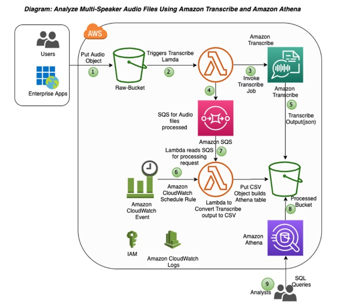

A call center used to hire experienced specialists to analyze the customer service calls attended by their small group of call center representatives. Each call center representative handles about 40-50 calls in a day. Over the years, as the company grew to more than a hundred employees, hiring specialists to analyze calls has not only become cumbersome but also ineffective. The company wants to move to AWS Cloud and is looking at an automated solution that can help them analyze the calls for sentiment and security analysis.
As a Solutions Architect, which of the following solutions would you recommend to meet the given requirements?
একটি call center তাদের call center representative-দের ছোট group যে customer service call-গুলো attend করত, সেগুলো analyze করতে অভিজ্ঞ specialist নিয়োগ দিত। প্রতিটি call center representative দিনে প্রায় 40-50টি call handle করেন। বছরের পর বছর company একশোরও বেশি employee-তে বড় হওয়ায় call analyze করতে specialist নিয়োগ দেওয়া শুধু ঝামেলাপূর্ণই নয়, অকার্যকরও হয়ে উঠেছে। company AWS Cloud-এ যেতে চায় এবং এমন একটি automated solution খুঁজছে, যা sentiment ও security analysis-এর জন্য call analyze করতে সাহায্য করতে পারে।
একজন Solutions Architect হিসেবে, প্রদত্ত requirement পূরণে নিচের কোন solution আপনি recommend করবেন?
Correct: C. Why it is right
Prothom kaaj: call er audio ke text kora → Amazon Transcribe (speech → text, ASR) (PDF p. 566).
Tarpor text file S3 e rekhe Amazon Athena diye serverless SQL analysis (Section 22); option er reference AWS ML blog "Transcribe + Athena" pattern. Ei option e duita managed service, automated, specialist lage na.
Judgement call: course onujayi sentiment ber kora asole Comprehend er kaaj (PDF p. 571), kintu option e Comprehend nai; given option er moddhe C best.
Why the other options are wrong
- A. "Amazon provided ML algorithms" vague, kono managed service er naam nai; audio → text er jonno Transcribe lagbe. Kinesis Data Streams nije audio transcribe kore na.
- B. Alexa AWS er ASR service na (Alexa er technology Lex hisabe ashe); ar Kinesis Data Streams audio file transcribe korar jaygao na.
- D. QuickSight dashboard e "human analysis" = abar manush diye analysis, automated sentiment analysis na; QuickSight visualization tool, text analyze er engine na.
Keyword: analyze calls automated → audio → text Transcribe + text analysis (Athena)
Original explanation (English)
Correct option:
Use Amazon Transcribe to convert audio files to text. Run analysis on these text files using Amazon Athena to understand the underlying customer sentiments - Amazon Transcribe is an automatic speech recognition (ASR) service that makes it easy to convert audio to text. One key feature of the service is called speaker identification, which you can use to label each individual speaker when transcribing multi-speaker audio files. You can specify Amazon Transcribe to identify 2–10 speakers in the audio clip.
Amazon Athena is an interactive query service that makes it easy to analyze data in Amazon S3 using standard SQL. Athena is serverless, so there is no infrastructure to manage, and you pay only for the queries that you run. To leverage Athena, you can simply point to your data in Amazon S3, define the schema, and start querying using standard SQL. Most results are delivered within seconds.
Analyzing multi-speaker audio files using Amazon Transcribe and Amazon Athena:

via - https://aws.amazon.com/blogs/machine-learning/automating-the-analysis-of-multi-speaker-audio-files-using-amazon-transcribe-and-amazon-athenaIncorrect options:
Use Kinesis Data Streams to read in audio files as they are generated. Use Amazon provided machine learning (ML) algorithms to initially convert the audio files into text. These text files can be analyzed using various ML algorithms to generate reports for customer sentiment analysis - Amazon Kinesis can be used to stream real-time data for further analysis and storage. Kinesis Data Streams cannot read in audio files. You will still need to use AWS Transcribe for ASR services.
Use Kinesis Data Streams to read in audio files into Amazon Alexa, which will convert the audio files into text. Kinesis Data Analytics can be used to analyze these files and Amazon Quicksight can be used to visualize and display the output - Kinesis Data Streams cannot read in audio files. Amazon Alexa cannot be used as an Automatic Speech Recognition (ASR) service, though Alexa internally uses ASR for its working.
Use Amazon Transcribe to convert audio files to text. Use Amazon Quicksight to run analysis on these text files to understand the underlying patterns. Visualize and display them onto user Dashboards for human analysis - Amazon Quicksight is for the visual representation of data through Dashboards, graphs and various other modes. It has a rich feature set that helps analyze data and the complex relationships that exist between different data features. It is, however, not a powerful analysis tool like Amazon Athena.
References:
References: https://aws.amazon.com/blogs/machine-learning/automating-the-analysis-of-multi-speaker-audio-files-using-amazon-transcribe-and-amazon-athena · https://aws.amazon.com/athena